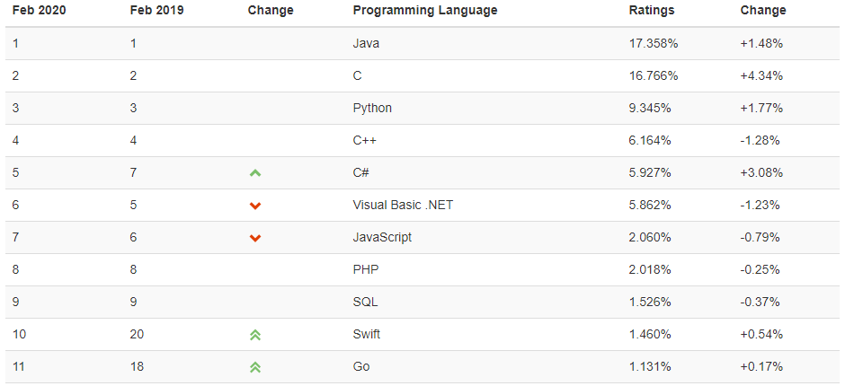
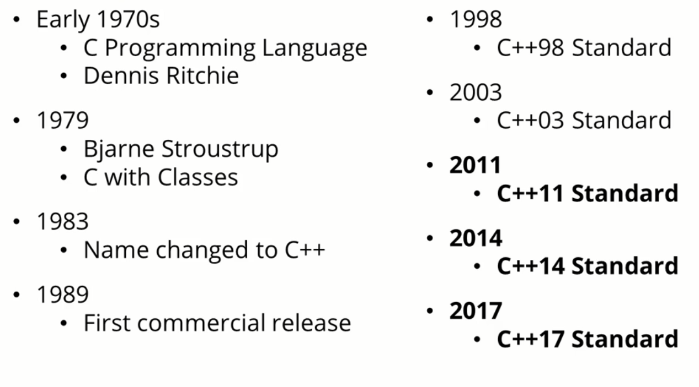

一、C++ 介绍#
1. 语言的产生#
C++ 由 Bjarne Stroustrup 于 1979 年在贝尔实验室开始设计开发的，由于C++ 进一步扩充和完善了 C 语言，是一种面向对象的程序设计语言 ，所以最初命名为带类的C 。C++ 是 C 的一个超集，事实上，任何合法的 C 程序都是合法的 C++ 程序。C++ 也是目前嵌入式 ( 无人驾驶 ) 的首选语言。

2. C++发展#
C++语言发展大概可以分为三个阶段：
- 第一阶段 从80年代到1995年。这一阶段C++语言基本上是传统类型上的面向对象语言，并且凭借着接近C语言的效率，在工业界使用的开发语言中占据了相当大份额；
- 第二阶段 从1995年到2000年，这一阶段由于标准模板库(STL)和后来的Boost等程序库的出现，泛型程序设计在C++中占据了越来越多的比重性。当然，同时由于Java、C#等语言的出现和硬件价格的大规模下降，C++受到了一定的冲击；
- 第三阶段 从2000年至今，由于以Loki、MPL等程序库为代表的产生式编程和模板元编程的出现，C++出现了发展历史上又一个新的高峰，这些新技术的出现以及和原有技术的融合，使C++已经成为当今主流程序设计语言中最复杂的一员。

3. C++优缺点#
- 优点
- 实现了面向对象程序设计。在高级语言当中，处理运行速度是最快的，大部分的游戏软件，系统都是由C++来编写的
- 功能强大，嵌入式首选。
- C++加上严格的codereview可以用来开除猪一样的队友，这是所有其他语言都不具备的功能
- 缺点
- 学习门槛高、难学
- 知识点繁杂，有声音说，c++标准委员会仅仅是为炫技并不考虑实际的工业需求
4. 与python比较#
程序有两种执行方式，解释执行和编译执行。 python是一种解释语言，不需要经过编译，是一边解释一边执行，由于底层封装了很多库供程序员使用，所以开发起来方便快捷，且能够很好地跨平台，写一些小工具小程序特别合适。 ---> exe ---> 发布源码
c++ 则属于编译语言，是一种需要编译后运行语言，编译后通过链接，整合其他依赖库，然后生成机器码（可执行文件），以后再运行，无需编译。在指定环境下编译运行，运行效率高 ，---> exe -> 很难查看源码
- python 代码打印
1 2 | |
- c++ 代码打印
1 2 3 4 5 6 7 8 9 | |